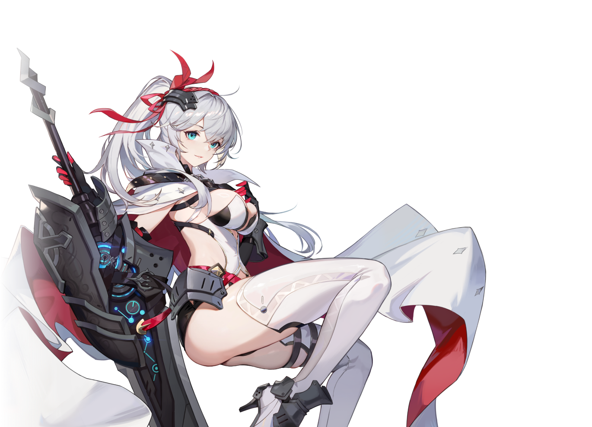

히간이루실 출시 첫날 뭐부터, 초반 스타터·캐릭터 고르는 법 정리
히간: 이루실 사전등록해두신 분들 많으실 텐데요, 막상 출시하고 나면 뭐부터 눌러야 할지 감이 잘 안 오실 수도 있잖아요. 아직 국내 정식 출시 전이긴 하지만, 이미 해외에서 여러 번 서비스돼온 버전이 그대로 들어오는 거라 미리 알아두면 도움이 될 것들이 꽤 있더라고요. 사전등록 보상 구성은 지난 글에서 이미 다뤘으니, 오늘은 출시 첫날 뭐부터 해야 하는지하고 스타터로 어떤 캐릭터를 눈여겨봐야 하는지를 중심으로 정리해볼게요.

히간: 이루실 공식 타이틀 로고예요.
이미지 출처: 히간: 이루실 공식 사전등록 페이지
히간이루실 출시일 언제예요?
정식 출시는 2026년 7월 23일(목) 오전 11시(KST)로 확정됐어요. 오늘이 20일이니까 딱 D-3, 이번 주 목요일이면 바로 만나볼 수 있는 거죠. 넥슨이 새로 만든 퍼블리싱 브랜드 'select all'의 첫 번째 타이틀인데, 데이터 기반 검토 과정을 거쳐 선보이는 라인업이라 넥슨이 이 게임에 거는 기대치도 꽤 높은 편이라고 해요. 개발은 중국 빌리빌리(Bilibili Inc.)가 맡았고요. 국내에 들어오는 건 완전 신작이 아니라 2023년 4월 글로벌 출시 이후 2024년 12월 중국, 2025년 12월 대만·홍콩·마카오에 순차 적용된 '2.0 리메이크' 버전이에요. 그만큼 다른 지역에서 이미 다듬어진 밸런스와 콘텐츠 양으로 만나볼 수 있다는 뜻이에요. 참고로 이 게임은 청소년 이용불가 등급이라 스토어에서 성인 인증을 미리 마쳐두면 첫날 진입이 더 매끄러울 거예요.
| 항목 | 내용 |
|---|---|
| 출시일 | 2026.07.23(목) 11:00 KST |
| 플랫폼 | 모바일 · PC |
| 장르 | 서브컬처 수집형 3D RPG |
| 등급 | 청소년 이용불가 |
참고로 사전등록 보상은 등록자 전원에게 별하늘 모집권 20장을 비롯해 여러 개가 지급되는데, 이 모집권은 가챠가 열리자마자 바로 쓸 수 있는 재화라 초반 챕터를 서두를수록 그만큼 빨리 써먹을 수 있어요. 자세한 보상 구성은 사전등록 정리 글에서 이미 다뤘으니 궁금하신 분은 그쪽을 참고해주세요.
캐릭터는 누구부터 봐야 할까
사전등록 페이지 기준으로 이름을 올린 대표 캐릭터는 유페리아, 클로아, 리사, 이루야, 시스레트 다섯 명인데요, 다섯 명 전원 일러스트와 대사가 이미 공개된 상태예요. 사전등록 초반엔 유페리아 말고는 실루엣만 있었는데, 지금은 그때 잠겨 있던 넷도 다 열려서 다들 표정까지 또렷하게 보이네요.

유페리아예요 — 해외판 기준으로는 호플라이트 계열이었어요.
이미지 출처: 히간: 이루실 공식 사전등록 페이지
| 캐릭터 | 공개된 대표 대사 |
|---|---|
| 유페리아 | "저는 당신의 검이자 방패입니다…" |
| 클로아 | "미래는 운명이 선택하는 걸까요, 아니면 당신이 선택하는 걸까요?" |
| 리사 | "얼어붙은 녀석들이야말로 최고의 관객이지, 히히… 이제 리사가 진리를 전해줄 시간이야." |
| 이루야 | "성급한 나쁜 아이에게는 조금 벌이 필요하지…" |
| 시스레트 | "나는 갈망해... 더 미친 듯이 피어나기를! 하하하하!" |
전투는 어떤 방식이에요
전투는 실시간 3D 액션과 카드 전술을 결합한 하이브리드 방식으로 진행돼요. 해외 버전 기준으로는 캐릭터를 어쌔신·캐스터·호플라이트·가디언·레인저·아디우트릭스, 이렇게 클래스 6종과 파이로·아이스·움브라·아네모·루미노, 속성 5가지로 조합해서 덱을 짜는 구조로 알려져 있는데요, 국내 버전도 같은 2.0 리메이크를 기반으로 하는 만큼 큰 틀은 비슷하게 갈 가능성이 높아요. 이 클래스·속성 조합이 다음에 이야기할 스타터 선택 기준과도 바로 이어지는 부분이에요.
| 항목 | 내용 (해외 버전 기준) |
|---|---|
| 전투 방식 | 실시간 3D 액션 + 카드 전술 하이브리드 |
| 클래스 | 어쌔신·캐스터·호플라이트·가디언·레인저·아디우트릭스 (6종) |
| 속성 | 파이로·아이스·움브라·아네모·루미노 (5가지) |
스타터로는 어떤 캐릭터를 노려볼까
그럼 스타터로는 누굴 눈여겨봐야 할까요? 해외에서 오래 서비스되다 보니 커뮤니티에서 꾸준히 상위권으로 꼽히는 캐릭터들이 있는데요, 국내 사전등록 5인 중 이루야·시스레트·유페리아·클로아 넷은 해외판에 이미 있던 캐릭터라는 게 확인됐어요(리사는 이번엔 매칭을 확인하지 못했어요). 특히 이루야는 해외판 이름이 Eluya인 어쌔신 계열 딜러로 상위권에 자주 꼽히고, 시스레트는 Sirslet이라는 이름의 파이로 속성 호플라이트 계열(대형 무기를 쓰는 타입)이에요. 유페리아는 Eupheria라는 이름의 호플라이트 계열, 클로아는 Kloar라는 이름의 캐스터 계열로 알려져 있어요. 다만 이 평가는 대부분 2.0 리메이크 이전 정보라, 국내에 들어오는 2.0 기준으로 그대로일지는 다시 봐야 해요. 그래도 스타터를 고를 때 참고할 만한 힌트는 되는 셈이에요.
| 캐릭터(국내) | 해외판 동일 캐릭터 | 계열(해외 기준) |
|---|---|---|
| 이루야 | Eluya | 어쌔신 · 딜러 |
| 시스레트 | Sirslet | 파이로 호플라이트(창병) |
| 유페리아 | Eupheria | 호플라이트 |
| 클로아 | Kloar | 캐스터 |
| 리사 | 매칭 미확인 | - |
출시 첫날 뭐부터 하면 될까
여기서부터는 해외 버전 흐름과 공식 발표 내용을 바탕으로 미리 정리해보는 순서예요. 국내에서 그대로 갈지는 출시 후 다시 봐야 하지만, 큰 틀은 참고가 될 거예요.
1순위 — 메인 스토리 초반 챕터부터 진행하기. 해외 버전에서는 메인 스토리 초반 몇 챕터를 클리어해야 가챠(소환) 시스템이 열리는 구조였다고 해요. 캐릭터부터 뽑고 싶어도 스토리를 어느 정도는 밀어야 한다는 뜻이죠.
2순위 — 우편함부터 열어보기. 해외 버전에서는 보상이 자동 지급이 아니라 인게임 우편함에서 직접 받아가는 방식이었어요. 국내 사전등록 보상도 똑같이 우편함 수령일 가능성이 높으니, 첫 접속하면 우편함부터 확인하시는 걸 추천드립니다.
3순위 — 초보자 전용 배너 있는지 확인하기. 해외 버전엔 20회를 뽑으면 3성 캐릭터 하나가 확정으로 나오는 신규 유저 전용 배너가 따로 있었다고 하는데요, 다만 이건 해외 버전 기준이라 국내에서 배너 구성이나 확률이 그대로 갈지는 출시 후 직접 확인이 필요해요.
4순위 — 방치형 보상도 챙기기. 넥슨이 밝힌 2.0 리메이크의 특징 중 하나가 반복 사냥 피로도를 덜어주는 방치형 시스템인데요, 보통 이런 시스템은 접속하지 않아도 어느 정도 보상이 쌓이는 경우가 많으니 첫날부터 켜두면 손해 볼 게 없거든요.
| 순위 | 할 일 (해외 버전 기준) |
|---|---|
| 1순위 | 메인 스토리 초반 챕터 클리어 (가챠 해금) |
| 2순위 | 우편함에서 사전등록·튜토리얼 보상 수령 |
| 3순위 | 초보자 전용 배너 20연 뽑기 (3성 확정) |
| 4순위 | 방치형 보상 켜두기 |
히간이루실 초반공략 정리
정리해보면 출시일은 7월 23일(목) 11시, 대표 캐릭터 5인은 이미 전원 공개됐고 이 중 이루야·시스레트·유페리아·클로아는 해외판에도 있던 얼굴이에요. 첫날 동선은 위 표대로 움직이시면 크게 헤매실 일은 없을 거예요.
| 항목 | 내용 |
|---|---|
| 출시일 | 2026.07.23(목) 11:00 |
| 공개된 캐릭터 | 5인 전원 (이 중 4인 해외판 매칭 확인) |
| 첫날 최우선(해외 기준) | 메인 스토리 초반 챕터 클리어 |
✔ 히간이루실 같이 보기 좋은 내용
· 사전등록 보상·게임 소개는 이전 글에서 더 자세히 다뤘어요 (발행 시 링크 연결)
아직 다 나온 정보는 아니지만, 미리 감을 잡아두면 출시 당일 훨씬 여유 있게 즐기실 수 있을 거예요. 실제로 붙어보고 달라지는 부분은 다음에 또 짚어볼게요.